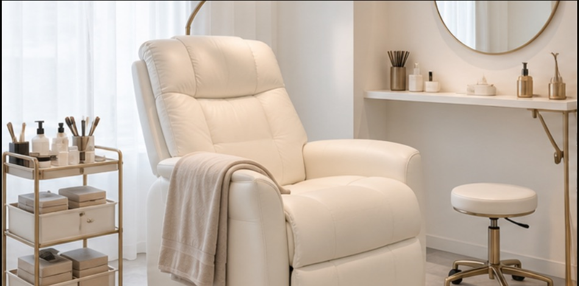
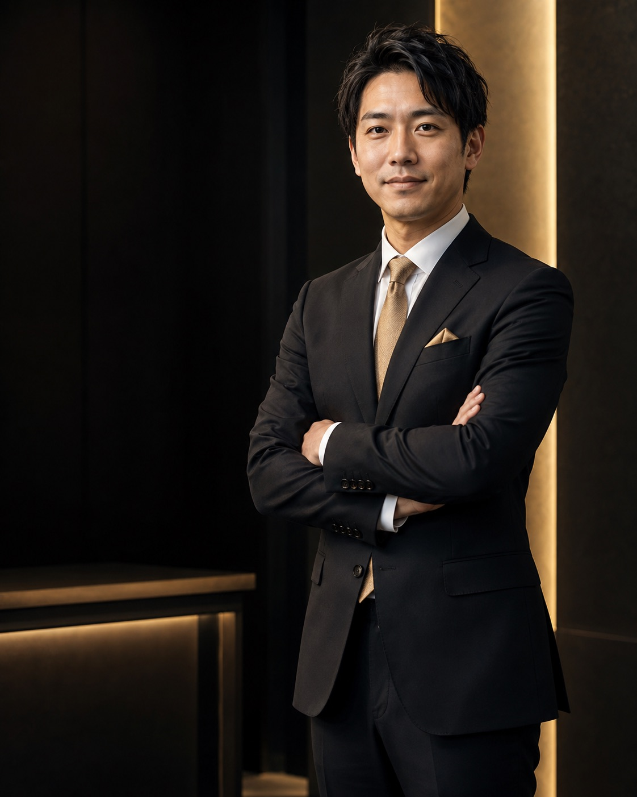
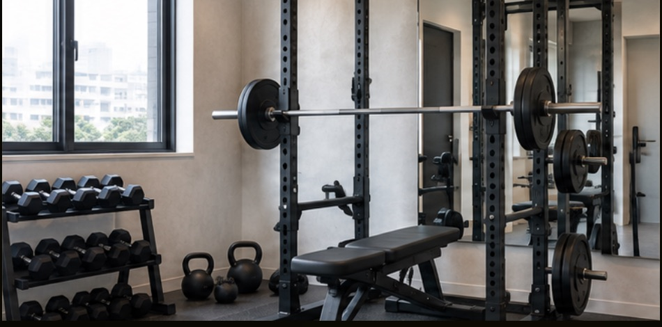
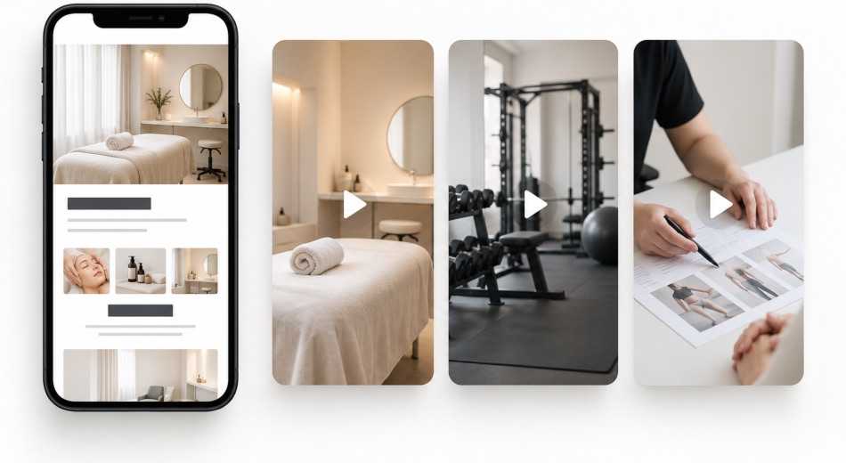

事例1
オープン直後のアイサロン

新規客の1/3を広告から集客
HPB・予約サイトと広告を連携し、予約までの流れを整備。

人物はイメージです
集客広告・求人広告、どちらもご相談ください。
こんな悩みは
ありませんか
独学・運用代行だけでは難しい理由
| 方法 | できること | 難しいこと |
|---|---|---|
| 独学 | 知識は増える | 自店に合う判断 |
| 運用代行 | 実務は任せられる | 判断基準を社内に残す |
※運用代行は、担当者育成・ノウハウ移管を含まない契約の場合。
支援のコンセプト
LTV＝継続利用を含む、お客様1人あたりの価値。
事例紹介

HPB・予約サイトと広告を連携し、予約までの流れを整備。

Instagram広告を組み合わせて検証。AIでLPを社内制作できる体制も構築。
記事LP・アンケートLP・スワイプLPを活用し、継続利用まで見据えた動線を設計。
※数値は支援事例の一例です。写真は店舗イメージです。成果を保証するものではありません。
支援内容
LTV・粗利・予算
ターゲット・訴求
広告・LP・予約導線
接客・LINE・追客
求人広告・採用LP
応募から面接・採用へ
数字の読み方
判断基準・運用フロー
実際の数字と施策を使い、
次に試すことを一緒に決めます。
3つのサポート
6ヶ月間・月2回
▣サービス開始から。
MTG終了後も相談可能。
実務で使う手順と考え方を、いつでも確認。
▤6ヶ月継続の契約特典

早期解約時は、以下の制作費をご請求します。
| 動画 | 11,000円／本 |
|---|---|
| スワイプLP | 50,000円／本 |
進行イメージ
商品・商圏・LTVと、目標を整理。
広告・LPと、来店・成約などの数字を確認。
有効な施策と、続けられる運用フローを整理。
※進行は一例です。店舗の状況や課題に合わせて調整します。
広告マーケティング支援に加えて
AIを使って、
毎日の業務も効率化。
| 業務 | AIの活用例 |
|---|---|
| 広告文・企画 | 切り口・たたき台の作成 |
| LP制作 | 構成・原稿・制作を補助 |
| レポート・分析 | 数値の整理・要約 |
| 社内ナレッジ | 情報・手順を探しやすく |
現在の業務と習熟度に合わせて、
無理なく使える範囲から導入します。
料金・対応範囲
| 料金項目 | このページから | 通常 |
|---|---|---|
| 初期費用 | 無料 0円 | 200,000円 |
| 月額費用 | 50,000円 ×6ヶ月 | 50,000円 ×6ヶ月 |
| 支払総額 | 300,000円 | 500,000円 |
支援範囲が異なるサービスの比較例です。
| 選択肢・期間 | 費用例（税別） |
|---|---|
| 広告運用代行 12ヶ月 | 60万円 ＋初期費用・制作費など |
| 内製化支援 12ヶ月 | 120万円 ＋ツール利用料 |
| スクール 4ヶ月 | 35万円 受講料 |
| 本サービス 個別6ヶ月＋チャット1年間 | 30万円 初期費用無料 |
※比較情報の確認日：2026年9月7日。広告費・担当者の人件費は含みません。支援範囲・追加費用は各プランで異なります。
| 選択肢 | 知識・体制の例 |
|---|---|
| 独学 | 学習知識・自分の試行錯誤 |
| 運用代行 | 配信実績。育成・移管は契約次第 |
| 内製化支援 | 運用スキル・手順・判断基準 |
| スクール | 広告の知識・実習経験 |
| 本サービス | 自店の戦略・改善の判断基準・続けられる運用フロー |
複数店舗・複数拠点でも
集客・求人のどちらも対応。
EC・法人向け・オンライン事業も相談可能。
よくある質問
はい。目標・予算・準備から整理。LTVやAI活用も、現状に合わせて支援します。
はい。過去の施策と現在の体制を確認し、改善点と役割分担を一緒に整理します。
商品・商圏・客層・体制に合わせて設計。集客・求人の課題から、優先順位を決めます。
施策を決める理由と、検証方法を共有。自社に判断基準と改善方法を残す支援です。
月25,000円は、1年間で考えた換算額です。このページからのお問い合わせで初期費用無料。実際のお支払いは月50,000円×6ヶ月、総額300,000円（いずれも税別）です。
はい。個別MTGは6ヶ月間、チャット相談は開始から1年間です。7〜12ヶ月目も、引き続き相談できます。
6ヶ月間の継続が条件です。早期解約時は、動画11,000円／本、スワイプLP 1本につき50,000円をご請求します。
無料相談
今のお悩みと、目指したい姿を
お聞かせください。
無理な営業は行いません。
支援が自社に合うかどうかもご相談ください。
メールでのお問い合わせ
info@admoat.net